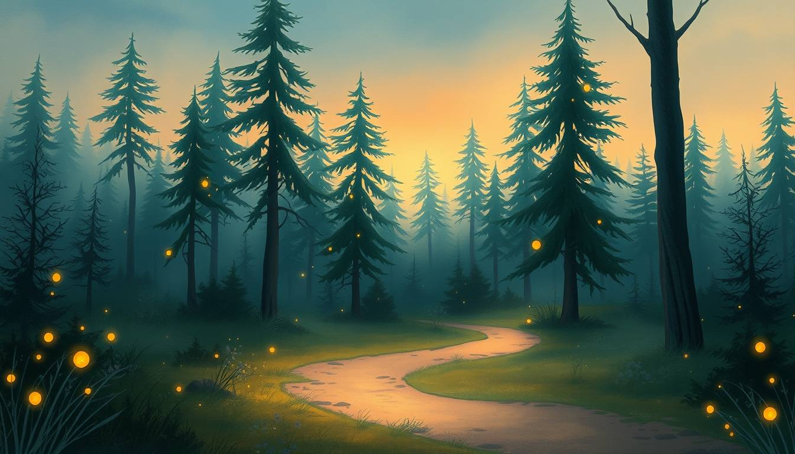
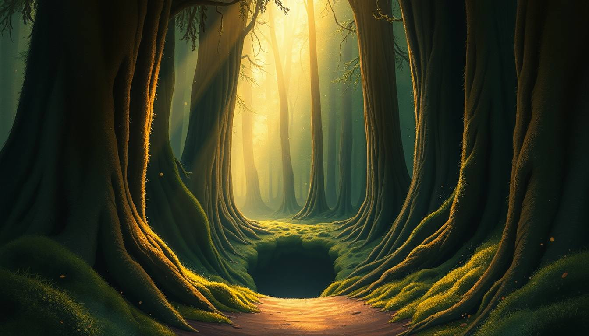

Le Storie di Alessio
Viaggio nel Bosco
Scorri piano. Il bosco ti sta aspettando.
Oltre i primi alberi c'è una soglia.
Più scendi, più il bosco diventa magico.
E in fondo… il cuore del bosco brilla.
scorri


Scorri piano. Il bosco ti sta aspettando.